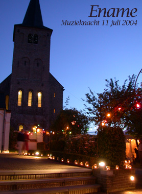

Muzieknacht
zondag 11 juli 2004 | Kultuur
Het was gisterenavond weer gezelligheid troef in hartje Ename. De kleine dorpskern was voor de gelegenheid volledig autovrij gemaakt. In en rond het historisch museum en de eeuwenoude St. Laurentiuskerk brandden honderden kaarsjes. Dit jaar was het thema van de Museumnacht ‘muziek’. Vanuit ons slaapkamerraam konden we genieten van een groepje jonge muzikanten die de tot nu toe met de meest originele opstelling voor de dag zijn gekomen die ik ooit gezien het: de Boomfanfare (zie foto).

Maar het hoogtepunt van de avond had de organisatie tot op het laatste bewaard. In de gerestaureerde kerk werden de bewoners getrakteerd op een prachtige selectie werken uit de Europese polyfonie, live gebracht door het Oost-Vlaamse Forlana Consort, onder leiding van Wouter Bossaer. Ik ga er niet te veel woorden aan vuilmaken — ik vermoed dat ik het überhaupt toch nooit uitgelegd krijg — maar laten we zeggen dat ik voor een klein uurtje de gelukkigste mens op aarde was toen de acht stemmen van dit gezelschap hun ding deden. De uitvoering was feilloos, de klankkleur van de locatie uitzonderlijk en de muziek zelf niet van deze wereld.
Toen ze uiteindelijk zwegen en iedereen vervolgens als gek stond te applaudisseren, had ik zin om elk van hen innig te omhelzen en te bedanken voor wat ze me hadden gegeven. Maar behalve het vermoeden dat dergelijk gedrag hoogst ongebruikelijk, om niet te zeggen volstrekt ongepast zou geweest zijn, realiseerde ik me op dat zelfde moment ook, dat voor wat ik net gehoord had, ik niet één of meerdere mensen moest bedanken, maar een ongrijpbare, etherische of bijna goddelijke kracht die hun stemmen samen had gebundeld tot iets wat hen zelf tegelijkertijd had overstegen. Net zoals één mier niet verantwoordelijk geacht kan worden voor het schijnbare intelligente handelen van haar kolonie.
Muziek wordt geschreven door mensen, uitgevoerd door mensen, maar wat ze veroorzaakt of tot stand brengt, ontaardt heel af en toe in iets niet-menselijk. Iets dat meer is dan wij samen. Muziek is het beste wat de mensheid ooit heeft voortgebracht. Dat is mijn overtuiging.
Hieronder staat het volledige programma van het Forlana Consort (op het bisnummer na):
- Respice in me – Philippe Rogier (1561-1596)
- O magnum mysterium – Tomas Luis de Victoria (1548-1611)
- O quam gloriosum – Jacob Vaet (1529-1567)
- Ad te, Domine – Philippe de Monte (1521-1603)
- Super flumina Babylonis – Philippe de Monte
- Stabat mater, deel X – Orlando de Lassus (1532-1594)
- Te lucis ante terminum – Thomas Tallis (1505-1585)
- Lamentation – Hyeronimus Vinders (1510-1550)
- O Jesu Christe – Jacquet de Berchem (1505-1585)
- Proch dolor – Josquin Desprez (1440-1521)
- Ite missa est – anon. (uit mis van Doornik, 1340-1350)

Jean-Pierre De Cnijf op 29 oktober 2004
Forlana Consort geeft op zaterdag 4/12 om 20u een concert in Kerk te Eksaarde (Lokeren). Indien interesse 0475-294355 of